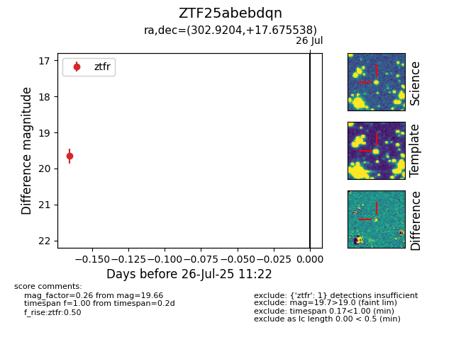

Target ZTF25abebdqn at 2025-07-26 11:22, see:
FINK: fink-portal.org/ZTF25abebdqn
Lasair: lasair-ztf.lsst.ac.uk/objects/ZTF25abebdqn
ALeRCE: alerce.online/object/ZTF25abebdqn
alt names
ZTF25abebdqn (ztf,fink)
coordinates:
equatorial (ra, dec) = (302.9204,+17.67554)
galactic (l, b) = (58.0325,-8.76736)
photometry
last ztfr=19.66
1 ztfr detections
